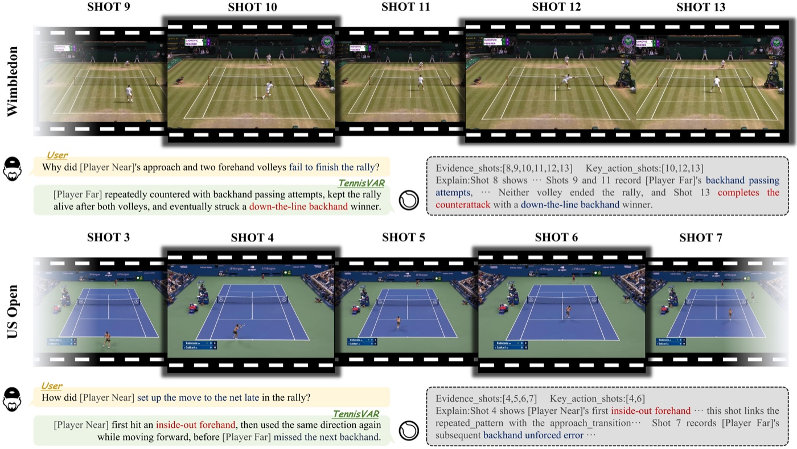

01Hello, I’m Yifan.
你好，我是梅一樊。
I am a second-year M.S. student at the Media Analytics & Computing Laboratory (MAC), Institute of Artificial Intelligence, Xiamen University, advised by Prof. Liujuan Cao and Prof. Rongrong Ji. My research focuses on multimodal understanding, vision-language models, and AI for Science.
I received my bachelor’s degree in Data Science and Big Data Technology from Beijing Sport University. Along the way, I was honored with the Beijing Outstanding Graduate Award, the National Scholarship, the Xiaomi Foundation Special Scholarship, and the Bank of China Scholarship.
I believe this is an extraordinary time for AI and sports to grow together. Guided by the idea of cultivating both mind and body, I train in tennis and fitness while exploring how AI can create real value for athletes and sports media. I am also experimenting with an AI startup that aims to bring the joy and energy of sport to more people.
Feel free to reach out if you are interested in multimodal AI or sports. I am always happy to connect and exchange ideas.
我是厦门大学人工智能研究院 媒体分析与计算实验室（MAC）的二年级硕士生，师从曹刘娟教授与纪嵘荣教授，研究方向聚焦于多模态理解、视觉语言模型及 AI for Science。
本科毕业于北京体育大学数据科学与大数据技术专业，曾获北京市优秀毕业生、国家奖学金、小米基金会特等奖学金、中国银行奖学金等多项荣誉。
我始终相信，AI 与体育的融合正处于最好的时代。秉持“文明其精神，野蛮其体魄”的理念，我正积极投入网球与健身训练，在探索 AI 赋能体育之前，先让自己深度融入体育生活。同时，我也在尝试创办 AI 初创企业，推动 AI 与体育的深层结合，让更多人感受到运动的魅力与快乐。
欢迎对 AI 多模态或体育领域感兴趣的伙伴随时与我交流联系！
Updates
News最新动态
Released TennisVAR 🎾 — come explore stroke-evidence-grounded tactical reasoning with us.
发布 TennisVAR 🎾，一起来探索基于击球证据的网球战术推理。
PixDLM was named a CVPR 2026 Compute Transparency Champion.
PixDLM 获评 CVPR 2026 Compute Transparency Champion。
PixDLM was selected as a CVPR 2026 Highlight paper.
PixDLM 入选 CVPR 2026 Highlight 论文。
PixDLM was accepted by CVPR 2026.
PixDLM 被 CVPR 2026 接收。
Started my graduate studies at Xiamen University’s MAC Laboratory.
在厦门大学 MAC 实验室开始研究生生活。
Graduated from Beijing Sport University and received the Beijing Outstanding Graduate Award.
从北京体育大学毕业，并荣获北京市优秀毕业生。
Joined Baidu as an algorithm intern, working on large language model fine-tuning and applications.
在百度担任算法实习生，从事大语言模型微调与应用。
Ranked first in the recommended-admission cohort and joined Xiamen University’s MAC Laboratory.
以第一名推免至厦门大学媒体分析与计算实验室。
Named an Outstanding Camper by summer programs at Shanghai Jiao Tong University, Zhejiang University, Beijing Normal University, and others.
参与上海交通大学、浙江大学、北京师范大学等夏令营并获优秀营员。
Received the Bank of China Outstanding Undergraduate Scholarship.
荣获中国银行优秀本科生奖学金。
Received the National Scholarship for Undergraduate Students.
荣获国家教育部本科生国家奖学金。
Selected work
Research研究项目
The path so far
Experience个人经历
2025 — Present
M.S. in Artificial Intelligence人工智能硕士
Xiamen University · MAC Laboratory
Advised by Prof. Liujuan Cao and Prof. Rongrong Ji. Researching multimodal understanding, vision-language models, and AI for Science.
师从曹刘娟教授与纪嵘荣教授，研究多模态理解、视觉语言模型与 AI for Science。
2024.10
Algorithm Intern算法实习生
Baidu
Large language model fine-tuning and application development.
从事大语言模型微调与应用开发。
2025
B.Eng. in Data Science & Big Data Technology数据科学与大数据技术学士
Beijing Sport University
Graduated with the Beijing Outstanding Graduate Award.
毕业时荣获北京市优秀毕业生。
Let’s connect